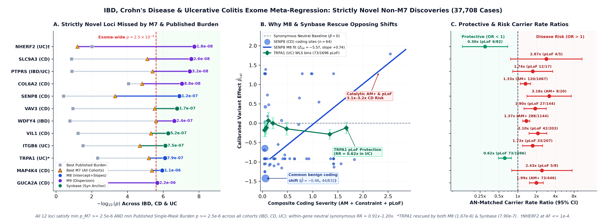
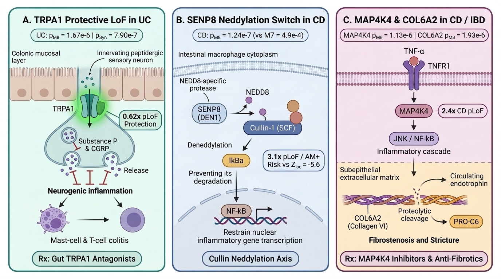
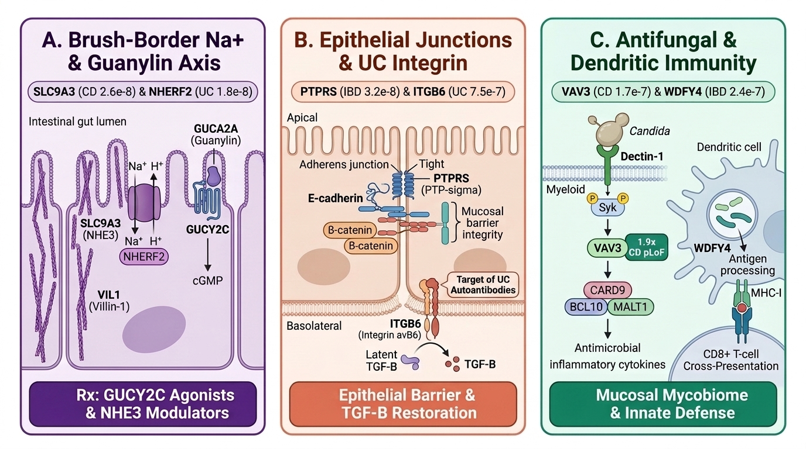

M7 leaves coding intercept βg0 free. Adding synonymous-calibrated Zloc rescues protective TRPA1 (UC), bidirectional SENP8 (CD), and MAP4K4 / COL6A2 (CD).
CD), PDZ scaffold NHERF2 (UC), PTPRS, WDFY4, and GUCA2A.
UC), antifungal GEF VAV3 (CD), and brush-border VIL1 (CD).

M7 = 6.3e-6 → pM8 = 1.67e-6 & pSyn = 7.90e-7 (Zloc = −2.42; Pub 4.7e-3). 73 vs 1,696 pLoF alleles (0.62× protection, Syn 1.03×); blocks Substance P/CGRP colitis → gut TRPA1 antagonists.
M7 = 4.9e-4 → pM8 = 1.24e-7 (Zloc = −5.57; Pub 0.38). Catalytic AM+/pLoF confer 3.1–3.2× CD risk while a common benign allele (β̂ = −0.46) cancels pooled burden; regulates Cullin-1/NF-κB.

| Gene (Cohort) | Rescuing Model | Best Pub p | Best M7 p | New Model p | AN-Matched Carriers (Syn RR) | Mucosal Biology & Clinical Translation |
|---|---|---|---|---|---|---|
NHERF2 (UC, 10−4) |
M9 Dispersion | 9.76e-03 | 6.31e-02 | 1.80e-08 | 0.30× Prot 6/82 pLoF (Syn 1.09×) | Apical PDZ scaffold tethering NHE3 (SLC9A3); partial NHE3 modulation (Tenapanor) |
SLC9A3 (CD) |
M9 Dispersion | 1.35e-01 | 7.60e-06 | 2.64e-08 | 2.87× Risk 4/5 pLoF (Syn 1.10×) | Brush-border NHE3 Na+/H+ antiporter; Mendelian congenital diarrhea & VEO-IBD |
PTPRS (IBD / UC) |
M9 + Synbase | 1.28e-01 | 3.87e-06 | 3.20e-08 (6.7e-8) | 1.74× Risk 12/17 pLoF (Syn 1.16×) | Receptor PTPσ stabilizing E-cadherin/β-catenin junctions (paralog PTPRK 1.21e-7 in CD) |
COL6A2 (CD / IBD) |
M9 + M8 (4 d.f.) | 8.74e-05 | 1.50e-05 | 8.84e-08 (1.9e-6) | 1.33× Risk 120/1067 AM+ (Zloc +2.68) | Subepithelial Collagen VI microfibril; releases PRO-C6 / Endotrophin in fibrostenosing CD |
SENP8 (CD) |
M8 (4 d.f.) | 3.80e-01 | 4.88e-04 | 1.24e-07 | 3.18× AM+ 8/20 (Zloc −5.57, Syn 0.99×) | NEDD8 protease (DEN1) de-neddylating Cullin-1 (SCF) to regulate IκBα / NF-κB |
VAV3 (CD) |
Synbase M7 | 1.14e-01 | 3.00e-06 | 1.67e-07 | 1.90× Risk 27/144 pLoF (Syn 0.91×) | Myeloid Rho/Rac GEF bridging Dectin-1 / Syk to CARD9–BCL10–MALT1 antifungal defense |
WDFY4 (IBD / CD) |
M9 Dispersion | 1.67e-01 | 2.51e-06 | 2.40e-07 | 1.37× Risk 288/1144 AM+ (Syn 1.16×) | Endosomal BEACH scaffold required for cDC1 CD8+ T-cell cross-presentation |
VIL1 (CD) |
Synbase M7 | 5.89e-02 | 4.77e-06 | 5.24e-07 | 2.10× Risk 42/203 pLoF (Syn 1.20×) | Enterocyte brush-border Villin-1 actin-severing protein driving microvillar wound restitution |
ITGB6 (UC) |
Synbase M7 | 3.06e-02 | 2.01e-05 | 7.51e-07 | 1.73× Risk 33/207 pLoF (Ben 1.06×) | Epithelial αvβ6 integrin activating latent TGF-β; target of >90% pathognomonic UC autoantibodies |
TRPA1 (UC) |
Synbase + M8 | 4.71e-03 | 6.33e-06 | 7.90e-07 (1.7e-6) | 0.62× Prot 73/1696 pLoF (Syn 1.03×) | Colonic nociceptive sensory channel (Substance P/CGRP); validates gut TRPA1 antagonists |
MAP4K4 (CD) |
M8 (4 d.f.) | 1.53e-01 | 4.30e-06 | 1.13e-06 | 2.43× Risk 5/8 pLoF (βLoF = +0.92) | Ste20 kinase (HGK) driving macrophage TNF-α → JNK / NF-κB inflammation |
GUCA2A (CD) |
M9 Dispersion | 4.22e-01 | 3.91e-03 | 2.15e-06 | 1.99× Risk 73/446 AM+ (Syn 1.10×) | Goblet/enterocyte Guanylin peptide; directly druggable via oral GUCY2C agonists (Linaclotide) |
M7 in any IBD cohort (NOD2, IL23R, CARD9, CSF2RB, ZNF341, AFDN, SCNN1B), all published single-mask exome hits (TNFRSF6B, IL10RA, MST1R, RPS6KA1, PLCG1), age-related CHIP blood artifacts (DNMT3A, TET2), and mucin/paralog/repeat loci (MUC6, NBPF20, CYP2D7).